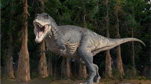
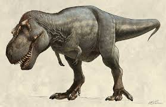
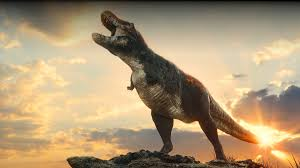

Tiranosaurus rex, ili skraćeno T. rex, živeo je pre oko 66 miliona godina na prostoru današnje Severne Amerike. Bio je jedan od poslednjih velikih dinosaurusa pre izumiranja, i jedan od najpoznatijih zbog svoje veličine, snage i zastrašujućeg izgleda. T. rex je bio dvonožni mesožder, visok oko 4 metra u kukovima, a dug čak do 12 metara. Imao je ogromnu glavu i snažne vilice sa zubima dugim i do 30 cm, sposobnim da drobe kosti svojih žrtava. Iako su mu ruke bile male, bile su veoma snažne i imale po dva kandžasta prsta. Bio je vrhunski predator svog vremena, ali verovatno i lešinar kada mu se ukazala prilika. Njegova kombinacija snage, brzine i oštrih čula čini ga jednim od najslavnijih dinosaurusa u istoriji.
  